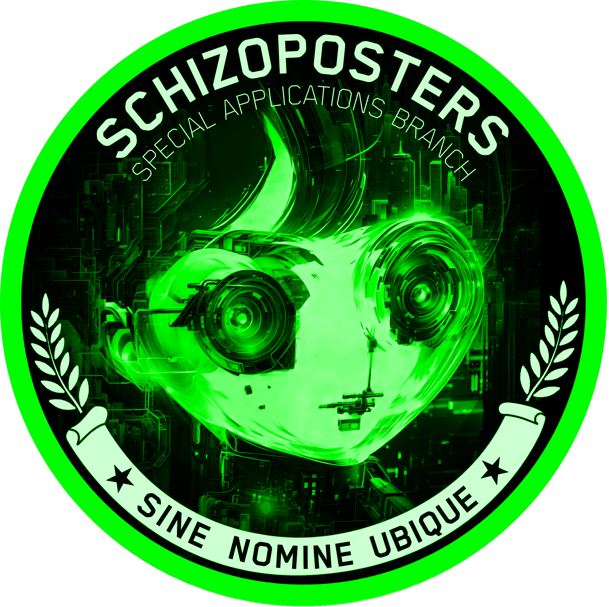
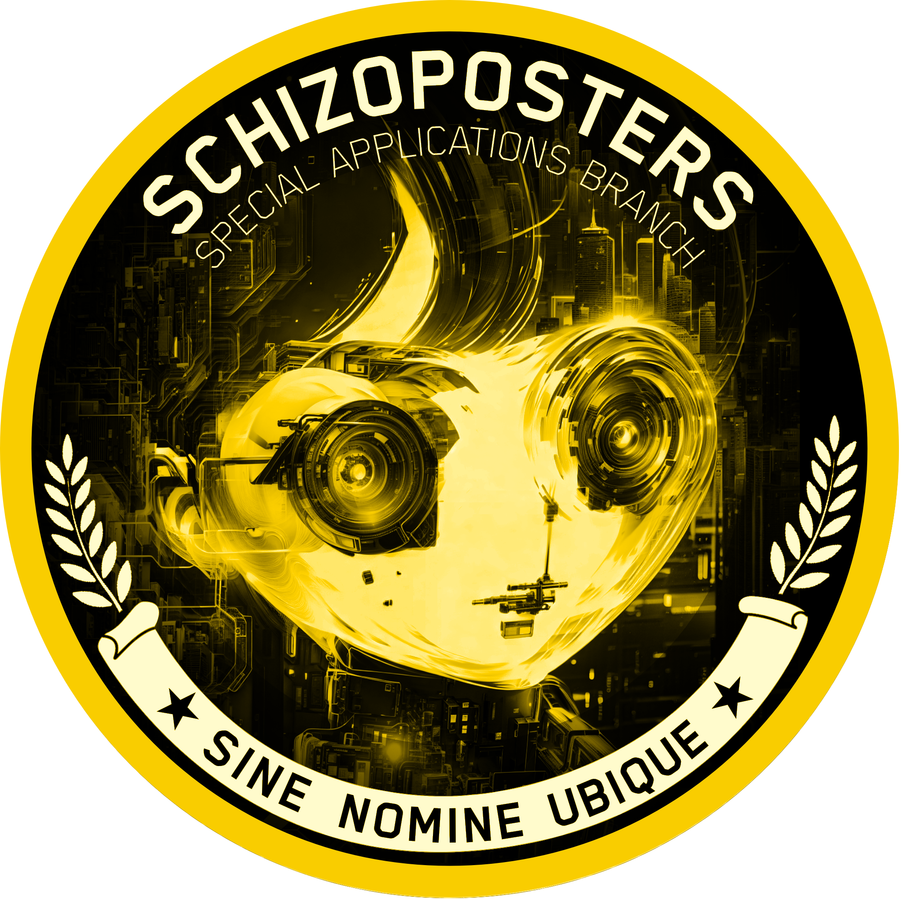
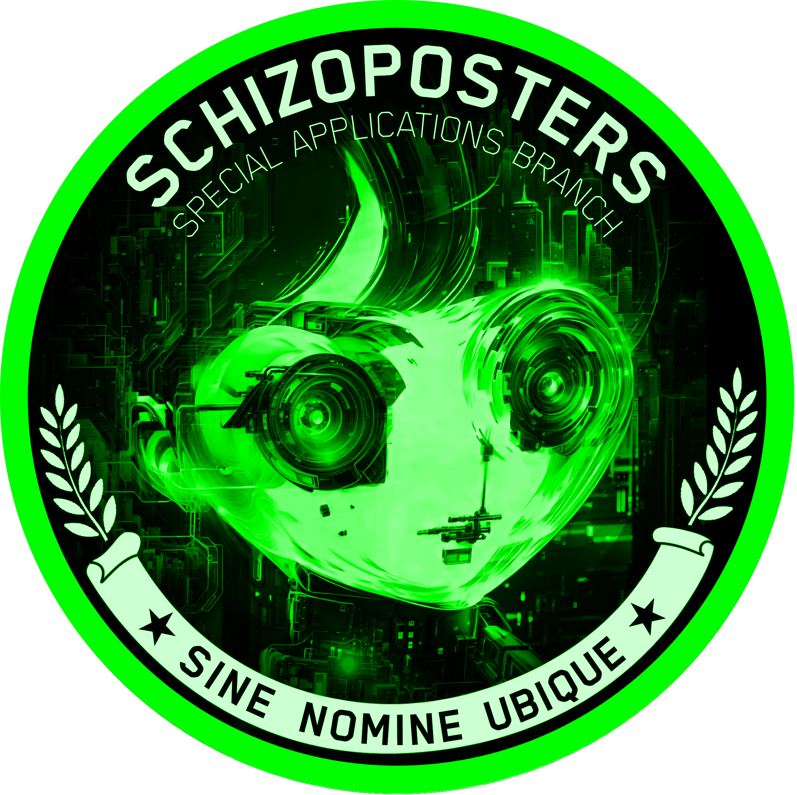
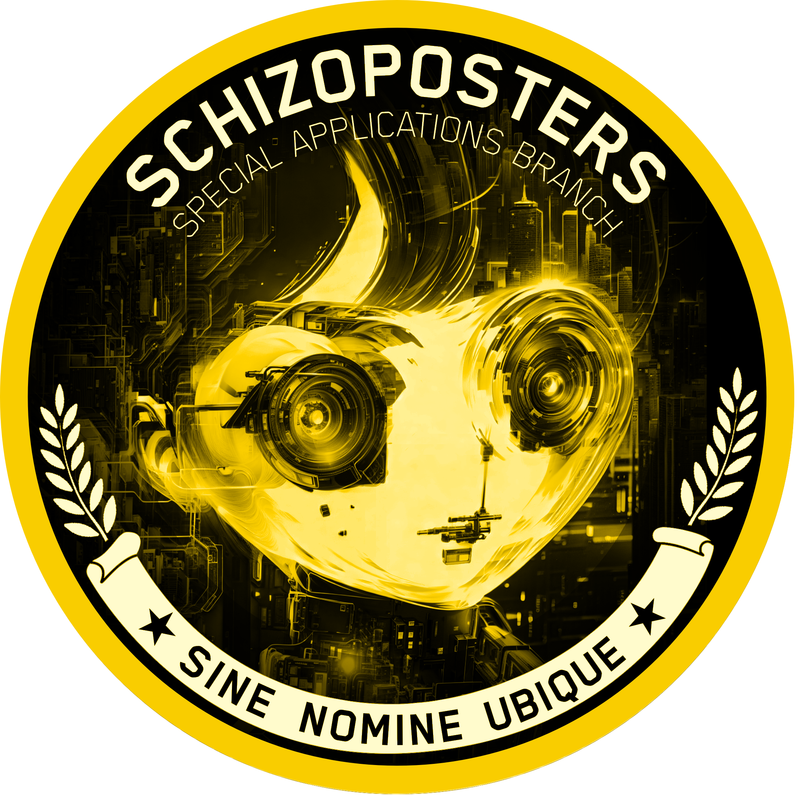
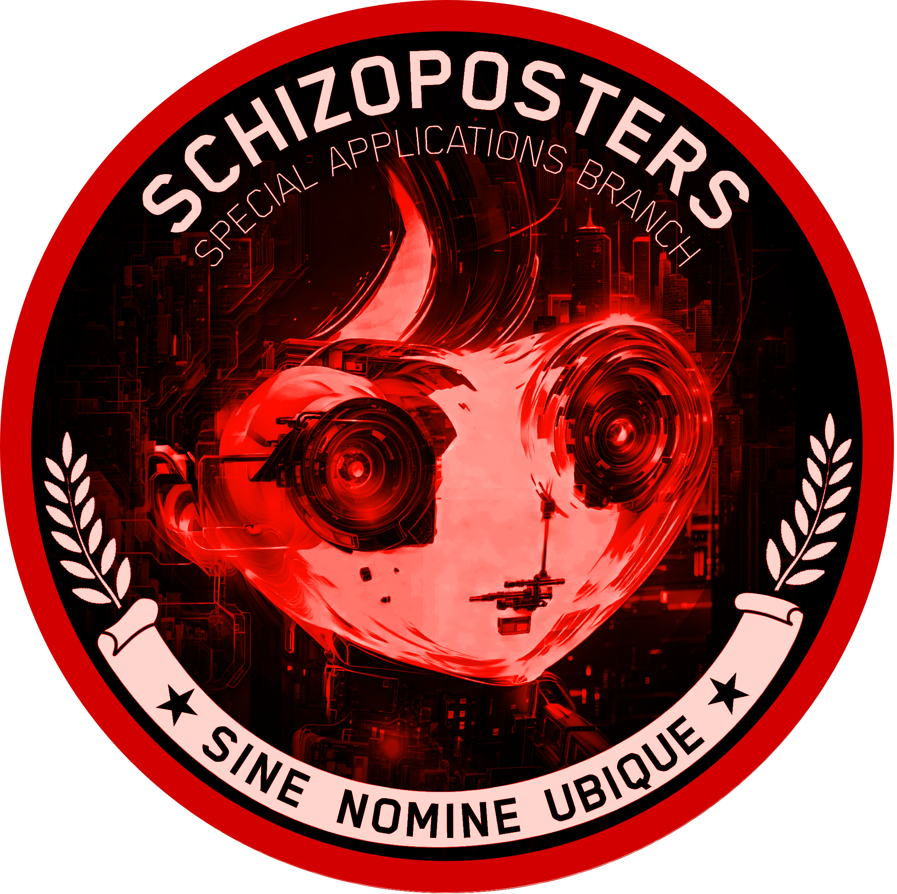
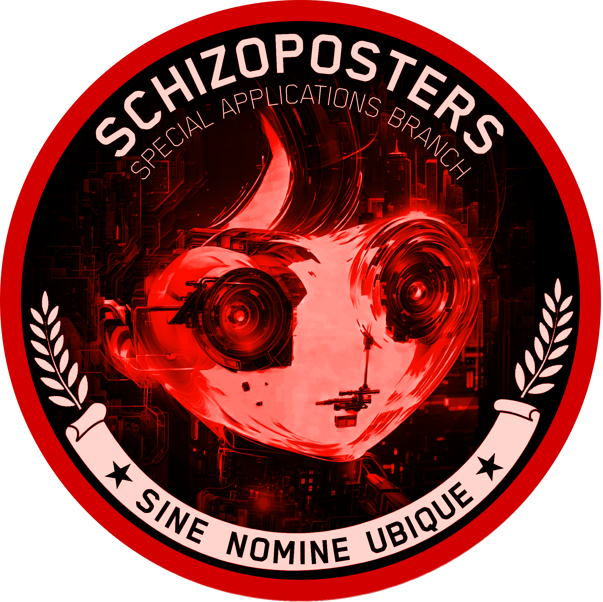

████████ Bot
A radbro webring Discord bot with a wild and community-driven feature set
Overview
████████ Bot is a multi-purpose, extensible Discord bot with deep integration into community culture, games, moderation, analytics, and cross-platform relays. It's designed for chaos, fun, and utility across Discord and Telegram with a modular system built for rapid feature expansion.
Major Features
📅 Daily !claim System
The core engagement system rewards users for claiming daily. Each day, users can use the !claim command to receive a payout that scales with their streak of consecutive claims. The longer a user claims without missing a day, the higher their daily reward grows, incentivizing consistent community participation.
Extra claims and bonus payouts are awarded for daily engagement with community features like particiapting in Daily Radbro or generating custom RadPacks. Users who participate in these activities earn additional claim refreshes and multiplier bonuses, turning everyday gameplay into a rewarding cycle of community creation and earning.
🎲 Gambling & Games
Fully interactive games including Blackjack, Roulette, Dice, Rock-Paper-Scissors, Coin Flips, and Quickdraw Duels. All games feature custom embeds, emoji-rich interactions, streaks, and statistics. Users can bet in-game currency with leaderboards and detailed stats tracking. Daily claims with streak bonuses and early claim penalties keep players engaged.
� Radpack Generation
Generate custom cigarette packs using casino credit winnings. Users can create unique Radpacks with personalized designs powered by their in-game earnings. Each generated pack is a piece of community art, converting gambling wins into shareable meme content.
�🛡️ Moderation & Analytics
Comprehensive tracking of moderator actions, ban streaks, and badge generation. Detailed per-user and per-action analytics including win/loss ratios, best streaks, claim patterns, and gambling statistics. LLM rate limiting controls access to AI features per user, per hour.
🛰️ Cross-Platform Relays
Bi-directional message, media, and asset relays between Discord and Telegram with toggleable settings. Integration with Noosphere and webring servers for seamless cross-posting. Relay chain tracking enables moderation across platforms.
🖼️ NFT & Web3 Integration
Monitor NFT sales, mints, and burns for configured collections with optional OpenSea and ENS support. RAD Token-based payment verification for in-bot actions like queue skips and claim refreshes.
🔊 Voice & Media
Control voice channels, manage user movement, play audio, and queue YouTube videos. Payment-based skip and refresh system for queue management keeps servers interactive and user-driven.
� DEFCON System
An interactive DEFCON status panel that escalates server alert levels from DEFCON 5 (all clear) through DEFCON 1 (maximum alert). Each level features custom profile pictures, unique audio alerts, and dynamic status messages that reflect the community's current state. The panel updates in real-time and commands can escalate or de-escalate the server's DEFCON status based on events or community decisions.
 



 

🛠️ Customization & Modes
Chinese Mode and St. Petersburg Mode provide toggleable alternate language, emoji, and payout logic. Archetype bots are modular sub-bots with unique personalities and relay logic. Dynamic image overlays power meme generation, and TempBotManager enables on-demand bot spawning and management. A Terminal Panel in dedicated channels provides live-updating status and analytics.
🤖 v1 Schizoposter Archetype Bots
Each v1 Schizoposter Archetype has a dedicated LLM bot assigned to it, enabling fully custom personalities and autonomous engagement. These AI-driven bots interact with community members using distinct communication styles, memes, and behavioral patterns unique to their archetype. The LLM layer allows for natural, context-aware responses that reflect each bot's individual personality, transforming them from simple command executors into active community participants with their own presence and voice.
Built With
Python 3.x + discord.py + web3.py, with mcstatus, PIL, dotenv, and more. Modular utility and system architecture for rapid feature expansion.
Special Thanks
Special thanks to schizalcoatl and RiverGod for their contributions and collaboration on this project.
What's Next
Ongoing feature drops, new games, deeper analytics, and more cross-platform chaos. Community-driven suggestions and meme integration drive continuous development.
A bot for Radbros
Built by Hating the Antichrist

Return Home
Back to main page